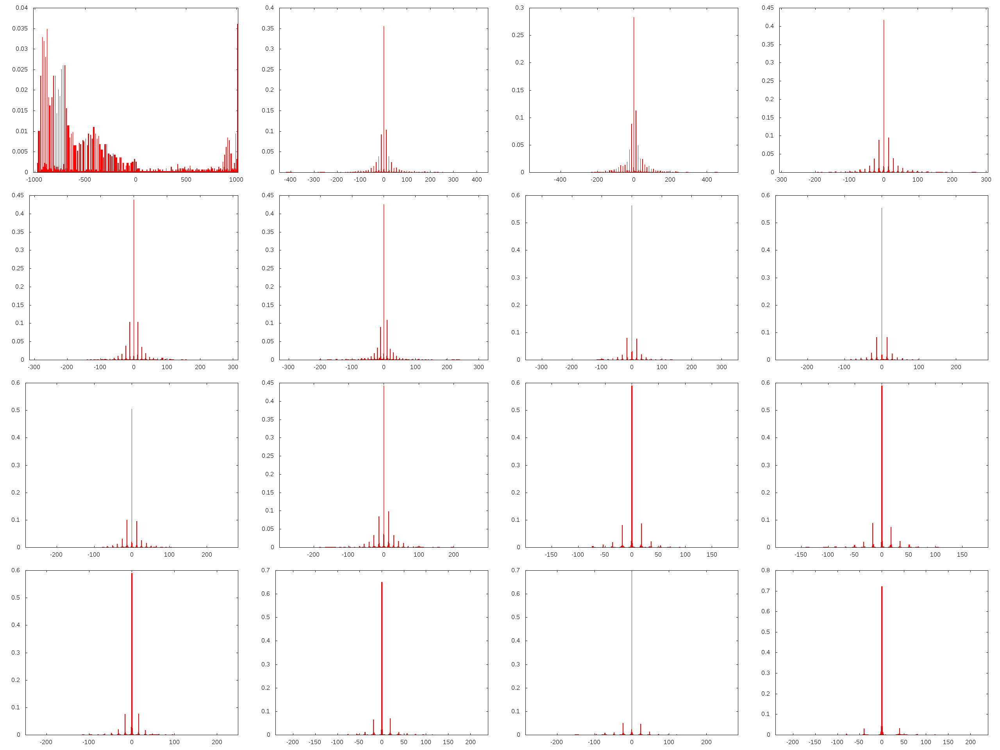
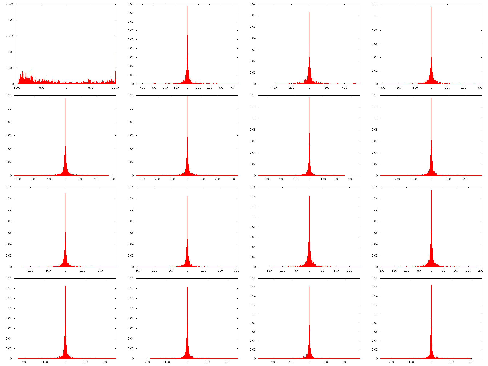
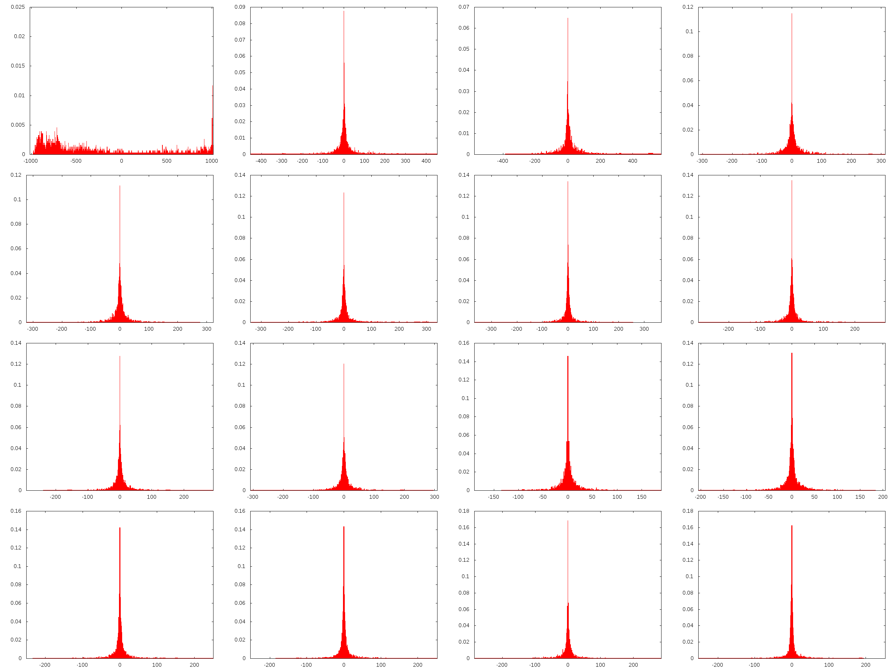
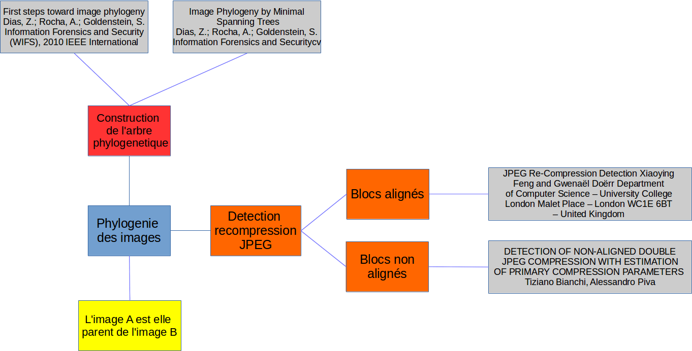

semaine2
Tous les papiers que j'ai pu lire jusqu'à maintenant se concentre sur l'identification d'une double compression sur une image, et toutes ces approches se basent sur l'image elle-même. Or, nous travaillons dans le domaine de la phylogenie, et nous disposons d'informations supplémentaire, qu'il serait dommage de laisser de coté. Il ne s'agit pas de savoir si une image a été doublement compressée, mais plutôt de savoir à partir de quelle image elle a été compressée.
À partir d'un ensemble d'images, il s'agirait de déterminer la probabilité qu'une image soit dans la parentée d'une autre.
Dans le meilleur des cas, la racine de l'IPT (image phylogeny tree) est l'image qui n'a aucune parentée. À partir de là, les images ayant cette image comme parent le plus probable seront ses descendantes directes, et ainsi de suite.
JPEG étant une compression avec perte, l'information de l'image même ne peut que diminuer. L'information créée par les compressions successives pourra être utilisée pour calculer la probabilité de parentée.
J'ai commencé utiliser libjpeg pour quelques tests, j'ai regardé l'histogramme des images en fonction de leur historique de compression, et bien qu'il semble trivial de détecter une recompression avec une qualité plus élevée qu'une des qualités de compression précédentes (Fig. 1), il semble bien plus complexe de détecter une recompression avec une qualitée inférieure ou égale, du moins en utilisant l'histogramme. Fig. 2 montre l'histogramme d'une image compressée une fois avec Q=100 et Fig. 3 montre l'histogramme de la même image recompressée 100 fois avec Q=100 à chaque fois. On voit clairement que les différences sont minimes, et qu'il semble difficile d'utiliser l'histogramme.

Figure 1: Histogramme du coefficient DC et des 15 premier coefficients AC d'une image compressée avec Q=50 puis Q=100

Figure 2: Histogramme du coefficient DC et des 15 premier coefficients AC d'une image compressée avec Q=100

Figure 3: Histogramme du coefficient DC et des 15 premier coefficients AC d'une image compressée 100 fois avec Q=100
Je pense que je sais maintenant plus ou moins dans quelle direction partir comme expliqué au premier paragraphe et que je vais donc pouvoir plus orienter mes lectures et approfondir les articles lus.
Concernant mes lectures de la semaine, j'ai surtout lu les articles qui m'ont été conseillés, ils traitaient en majorité de la détection d'une double compression JPEG, en n'ayant comme information disponible que l'image elle même. Ce n'est pas vraiment notre cas, nous avons en effet beaucoup plus d'information, tout un ensemble de NDI (near duplicate images), la problématique est donc un peu différente.

Figure 4: Premier jet du plan